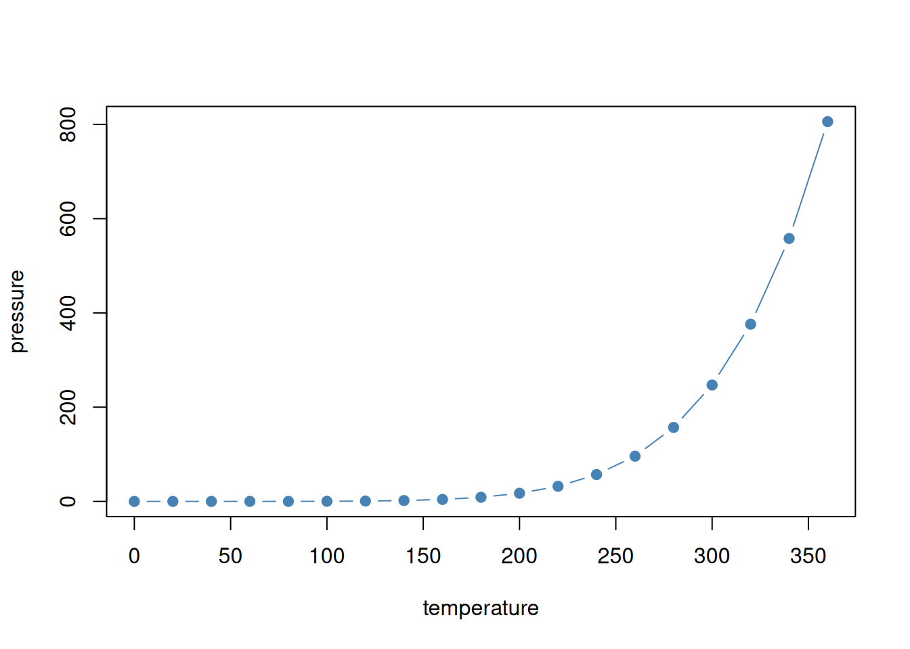

summary(mtcars$mpg)
#> Min. 1st Qu. Median Mean 3rd Qu. Max.
#> 10.40 15.43 19.20 20.09 22.80 33.90Quarto features
Source: vignettes/articles/showcase.qmd
quartodown renders every page with Quarto itself, so all of Quarto’s authoring features work in your vignettes and articles. This page shows some of them as they look on a quartodown site.
Callouts
Note
Callouts draw attention to a piece of text. There are five types: note, tip, important, warning and caution.
TipTip with a title
Give a callout a title with a heading as its first line.
WarningClick to expand
Callouts can be collapsible, which is handy for details most readers can skip.
Tabsets
Tabsets show alternative views of the same thing, one at a time:
Code annotations
Hover over the numbers to see the annotations.
quartodown::use_quartodown()
quartodown::build_site(devel = TRUE)
- 1
-
Write
_quartodown.ymland gitignore the build output. - 2
-
Build the site, loading the package with
pkgload::load_all(), and open it in your browser.
Function links
Functions from this package are linked to their reference page, with a tooltip on hover, both inline, like build_site(), and in code:
build_site(devel = TRUE)
preview_site()In code, functions from other packages are linked to their own documentation by downlit, like summary() in the tabset above.
Footnotes and margin content
Footnotes are written with [^name].1 Quarto shows them at the end of the page, and as a popup when you hover over the reference.
Content can also be placed in the margin.
This note sits in the margin, next to the paragraph it belongs to.
Figures and cross-references
Code output, such as plots, gets a caption and a label you can reference: see Figure 1.
Code
plot(pressure, type = "b", pch = 19, col = "steelblue")
Tables can be cross-referenced in the same way, as in Table 1.
mtcars data.
| mpg | cyl | disp | hp | drat | wt | |
|---|---|---|---|---|---|---|
| Mazda RX4 | 21.0 | 6 | 160 | 110 | 3.90 | 2.620 |
| Mazda RX4 Wag | 21.0 | 6 | 160 | 110 | 3.90 | 2.875 |
| Datsun 710 | 22.8 | 4 | 108 | 93 | 3.85 | 2.320 |
| Hornet 4 Drive | 21.4 | 6 | 258 | 110 | 3.08 | 3.215 |
| Hornet Sportabout | 18.7 | 8 | 360 | 175 | 3.15 | 3.440 |
| Valiant | 18.1 | 6 | 225 | 105 | 2.76 | 3.460 |
Colored output
Output keeps the colors it has in the console, such as cli’s messages and errors:
cli::cli_h2("Checking {.pkg quartodown}")
#>
#> ── Checking quartodown ──
#>
cli::cli_alert_success("Found {.val {3}} vignettes.")
#> ✔ Found 3 vignettes.
cli::cli_abort(c(
"Can't find {.file _quartodown.yml}.",
"i" = "Create one with {.fn quartodown::use_quartodown}."
))
#> Error:
#> ! Can't find _quartodown.yml.
#> ℹ Create one with `quartodown::use_quartodown()`.and tibbles:
Math
Inline math, like \(e^{i\pi} + 1 = 0\), and display math:
\[ \bar{x} = \frac{1}{n} \sum_{i=1}^{n} x_i \tag{1}\]
Equations can be referenced too: Equation 1 is the sample mean.
Diagrams
Mermaid and Graphviz diagrams are drawn from text:
flowchart LR A[Package sources] --> B[_quarto/] B -->|quarto render| C[docs/] C --> D[Tooltips added]
Layout
Content can be arranged in columns:
Left column. Quarto’s layout options arrange content, including figures, in a grid.
Right column. On narrow screens the columns stack.
Learn more
See the Quarto guide for everything else Quarto can do.